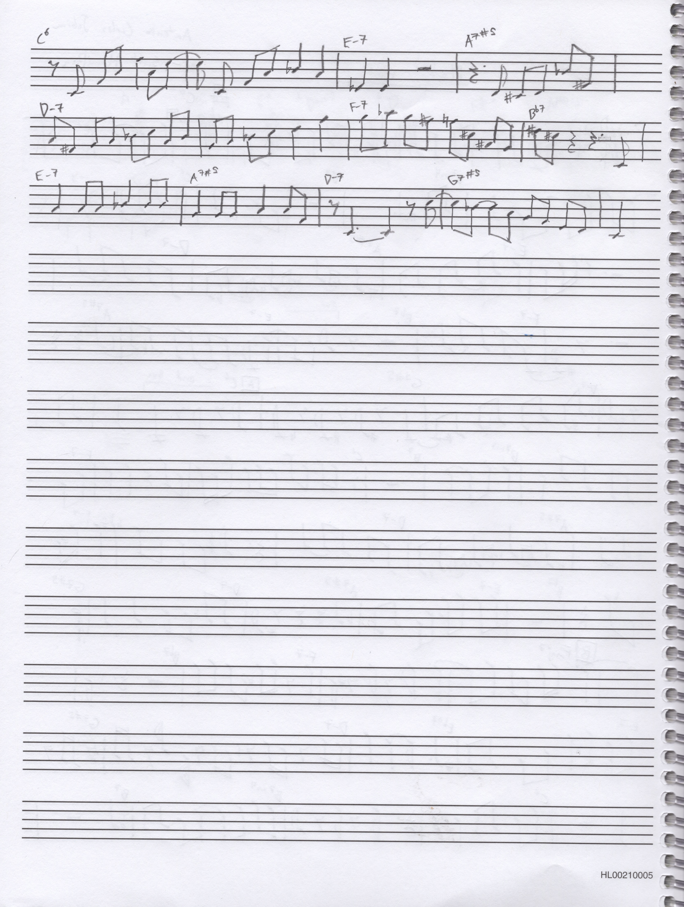
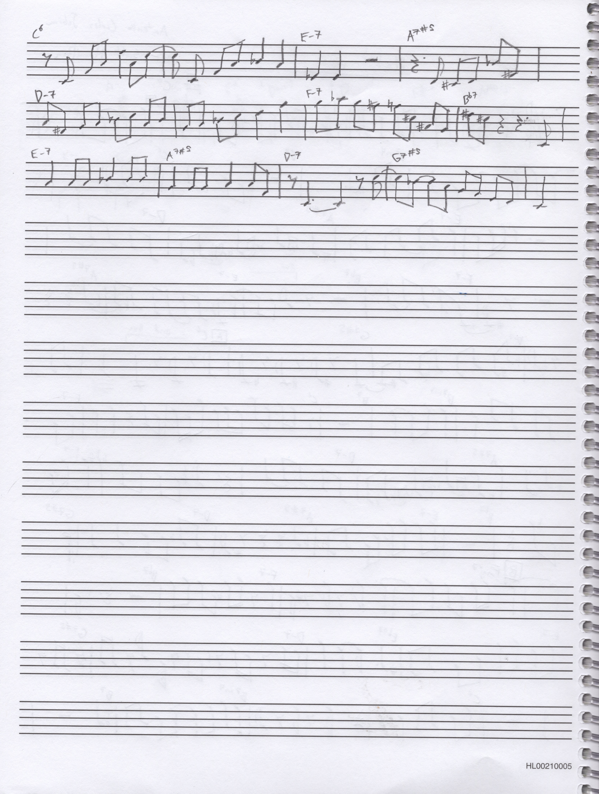
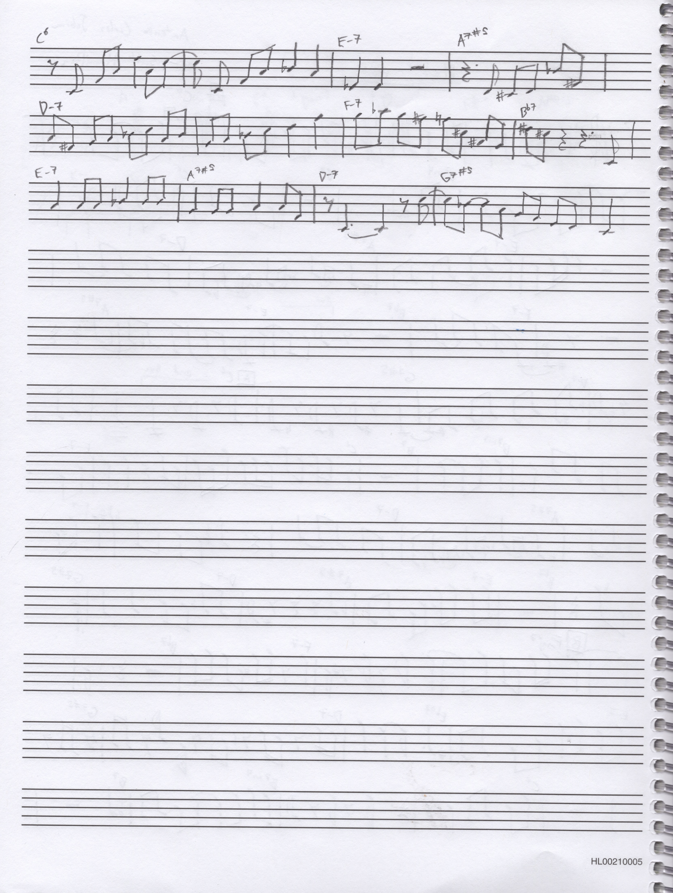

Thomas Castleman is a computer science & mathematics enthusiast and musician from Charlottesville, Virginia.
He enjoys working on software projects, frequenting coffee shops, creating computer graphics, thinking about math, as well as playing and studying jazz music and theory.
Personal Website
castleman.space - A platform for many of my excursions in computational art and visualization, this website contains much of my early work in graphics. This includes satisfying visual constructions, cellular automata, well-known problems in computing, and visualizations of algorithms, to name a few.
Github Profile
github.com/thomascastleman - Home to much of the actual code I've produced, my GitHub profile demonstrates a wide selection of the programs and software projects I've worked on over the years, both independently and collaboratively.
Music
The Nord alongside the harmoniser I created with friend Johnny Lindbergh (see later section)
I've begun to publish music that I've recorded over the years on my SoundCloud account. I've been a drummer for 10 years and have cultivated an interest in jazz through playing piano, an instrument first introduced to me by my dad many years ago. Some of my main musical influences include Oscar Peterson, Bill Evans, and Brad Mehldau.
Live Music Visualizer
In November of 2018, I was involved in a 3-week long course focused on technology, music, and visual art, during which I created this piece of software, which is capable of translating input from an electronic musical instrument into a visual display of colors and shapes. The project took shape over several days and I documented my progress through video clips which I have pieced together for your viewing. In the final clip, I play Debussy's Clair de Lune visualized with one of my favorite configurations (shattering triangles, like glass).
Harmonic Interpreter
In an effort to create music visualizations that are sensitive to the qualities of the harmony being played, I embarked on a journey to algorithmically classify sets of notes based on their harmonic qualities.
The above paper details my approach, which involves interpreting the notes with every possible root, and then scoring each interpretation based on the presence or absence of certain intervals, the importance of which is specified in the parameters of the interpreter.
A demo of live chord interpretation using my algorithm
I have already implemented a Processing sketch which takes MIDI input from a keyboard and displays all twelve interpretations, which can be found here. I plan to use this technology to design visualizations that respond to the intricacies of the harmony being played.
Snowflake Fractals
Upon hearing about the Koch snowflake, a fractal with infinite perimeter and finite area, I wanted to try to generalize the mysterious mathematical structure, drawing conclusions about the way its area converges depending on the shape of the snowflake. I wrote this paper in early 2018 to present my findings in a formalized way.
In August of 2018, I deployed StabOverflow, an online Q&A forum for CS students at St. Anne's-Belfield. Modeled after the widely-used Stack Overflow, StabOverflow allows students to ask questions, make comments, and respond with answers to CS-related problems. The idea was to facilitate interaction between members of the CS department across class / grade levels, and to construct, over time, a cumulative resource for all CS students to reference.
As part of the same technology, music, and visual art course mentioned above, I wrote another piece of software to integrate music and computation, this time using a model known as a Markov Chain to compose melodies based on live training data.
Character Recognition
As my friend Johnny Lindbergh completed research on the use of neural networks in machine learning for his senior capstone research project, we decided to experiment with building a simple neural network from the ground up--mostly to test our understanding of the math taking place in algorithms such as gradient descent.
The result of our labors is this network, a digit classifier capable of recognizing handwritten digits with 89.1% accuracy, written entirely from scratch. This project deeply improved my understanding of both the C language and the calculus used in backpropagation. While there are certainly many improvements / optimizations that could be made to this network, it served its purpose of laying the foundations of my understanding of machine learning methods.
To visualize the network's capabilities, I wrote a p5.js sketch (shown above) to take handwritten input, pass it through the net, and display the classification output vector. This demo can be found here.
Harmoniser
In late 2018, I came to Johnny with a project idea quite different from anything I'd done in the past: an audio processor to harmonize live vocals with the notes specified by a MIDI controller. I took inspiration from the harmoniser built for Jacob Collier, which was created at MIT by Ben Bloomberg.
A vocal sample visualized with a script we used to test our peak finding algorithm
Our harmoniser, the source for which can be found here, interfaces with a microphone and MIDI keyboard. Analyzing the audio from the mic, it detects the pitch. Using this estimate, it makes a copy of the audio signal for each of the notes coming through the MIDI keyboard, and pitch shifts these copies (using a technique called Pitch Synchronous Overlap and Add) to the corresponding frequency of those MIDI notes. These separate signals are then all averaged back together into one, which is played back.
The result is a really interesting layered vocal track that matches the notes held on the MIDI keyboard. I'm working on getting a video demo of this, which I'll put up here as soon as I can.
Discrete Math Homework
This document is one of my favorite homework assignments I completed for CS2102, the discrete mathematics course I took at the University of Virginia in the summer of 2018. The questions themselves are not listed, but these are my written responses, and the content of the assignment covers some of my particular favorite topics from the course, including graph theory, probability, and binary relations.
Rubik's Cubes
Solving Rubik's Cubes for speed is a hobby of mine, in addition to being something that brings me calm and peace of mind. In this clip, I solve the cube in 11.85 seconds, one of my fastest times ever. Over the years, I have participated in several cube-solving (or "cubing") competitions, competing in various events such as the 2x2 cube, 3x3 cube, 4x4 cube, and 3x3 cube one-handed.

Transcription
As a jazz musician, I often transcribe solos played by other musicians, usually to study their ideas and expand my own musical vocabulary. This is one of my recent transcriptions, a solo from tenor saxophonist Scott Hamilton played on one of my favorite tunes, A.C. Jobim's Meditaçao.
Bebop Research Paper
Inspired by my love of jazz music and culture, this research paper on the rise of bebop examines the racial, social, and economic implications of modern jazz and its function within broader jazz evolution.


 
